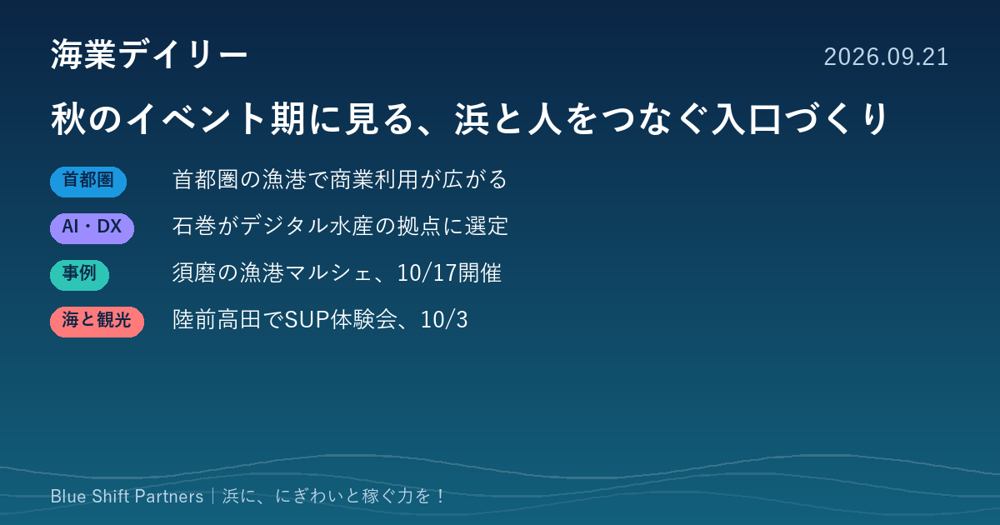

2026.09.21
秋のイベント期に見る、浜と人をつなぐ入口づくり

今日は新しい制度発表が少ない日です。そのため、漁港マルシェや海の体験会といった「浜の入口」づくりの事例と、水産DXの最新の拠点選定、首都圏の漁港活用の動きを整理しました。
漁港の土地・施設の商業利用が最大30年に。三崎、富津、三浦で広がる動き
日本経済新聞は6月、漁港の土地や施設を飲食・宿泊などに使える期間が最大30年に広がったと報じました。神奈川の三崎漁港では直売施設が約20年続いており、首都圏では富津でのボート保管施設、三浦でのホテルやヨット係留の構想が進んでいるとされています。
ここがポイント：利用期間が長くなると、民間事業者が投資を回収しやすくなります。漁協や自治体が事業者と組む際の条件整理に役立つ動きです。
出典：日本経済新聞「漁港潤す『海業』じわり」（2026-06-04）
デジタル水産業戦略拠点に宮城県の石巻圏域を選定。市場の電子化やAI活用を進める
水産庁は8月10日、令和8年度分のデジタル水産業戦略拠点として宮城県の石巻圏域を選定しました。市場業務の電子化、AIを使ったスマート漁業・養殖、デジタル人材の確保などに取り組みます。令和7年度までに選ばれた7拠点に続く8拠点目です。
ここがポイント：デジタル化を地域全体の計画として進める形が定着してきました。海業でも、予約や販売、在庫の管理を漁協単位で整える際の参考になります。
出典：水産庁「デジタル水産業戦略拠点の選定結果（令和8年度分・第1回）について」（2026-08-10）
神戸・須磨の漁師が主催する「漁港マルシェ」。10月17日にセリ体験や漁船遊覧
神戸フィッシャーマンズマーケット実行委員会が、10月17日（土）10時から16時まで、須磨港漁船だまり（東須磨）で「浜ごこち」を開きます。参加無料のセリ体験、活タコの販売、タッチプール、漁船遊覧、ロープワーク体験、稚魚放流などが予定されています。雨天の場合は18日に順延です。
ここがポイント：漁師自身が主催し、体験と販売を一日にまとめる形は、小さな漁協でも始めやすい海業の入口です。来場者の反応が次の常設事業を考える材料になります。
出典：神戸ジャーナル「東須磨で『漁港マルシェ』が秋に開催されるみたい」（2026-08-25）
陸前高田・広田町でSUP体験会。10月3日、午前の部は先着15名
陸前高田市観光物産協会が、10月3日（土）に広田町の大野海岸でSUP体験会を開きます。午前の部（10時から12時）は定員15名で先着順、午後の部は満員です。料金は1人3,000円で、対象は5歳以上、申込みは公式フォームから受け付けています。
ここがポイント：地元の観光団体とSUP店が組んだ体験は、漁村の海を観光資源として見せる分かりやすい例です。漁業との時間や場所の調整を含めて参考になります。
出典：陸前高田市観光物産協会（高田旅ナビ）「SUP体験会」（2026-09-01）
今日は新しい発表が少なく、秋の体験イベントが中心でした。マルシェやSUP体験のような小さな入口づくりは、来場者の声を集める機会にもなります。海業の事業化に向けて、どこから小さく試すかを考える際は、お気軽にご相談ください。